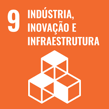

ODS
ODS 9 - Indústria, inovação e infraestrutura
Construir infraestruturas resilientes, promover a industrialização inclusiva e sustentável e fomentar a inovação.
ODS 17 - Parcerias e meios de implementação
Reforçar os meios de implementação e revitalizar a parceria global para o desenvolvimento sustentável.

Referências
Problema
Como fortalecer conexões e parcerias entre indústrias de Santa Cruz do Sul, que adotam o desenvolvimento e a produção sustentável?
Soluções
Objetivo
Criar um site que faça o intermédio de parcerias entre indústrias de Santa Cruz do Sul, que adotam o desenvolvimento e a produção sustentável, em prol da produção e desenvolvimento sustentável.